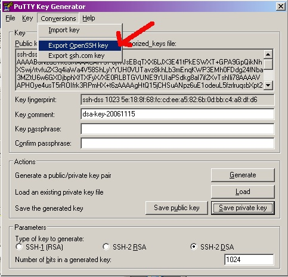

.\util of your Pandora FMS agent for Windows
and run puttygen.exe.Generate keys, SSH-2_DSA, 1024:

Export key to OpenSSH key (Cygwin uses a port of OpenSSH)


c:\pandora\keys\id_dsa:

c:\pandora_agent\keys\id_dsa.pub,
and also to the /home/pandora/.ssh/authorized_keys file.